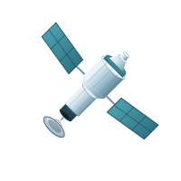

Physics Report
A Signal From Before the Stars: LIGO's Primordial Black Hole Detection
5m read
Universe Today



Telemetry suggests a 70% probability of successful stage separation. New heat shield tile configurations are being finalized at Starbase...
The latest signals decoded from Universe Today, NASA JPL, and observatories across the known sectors.
NASA sends a clever instrument that hunts for water without digging, using subatomic particles to sniff out hidden ice deposits at the lunar south pole.
234,000 simulations reveal four possible evolutionary paths that explain why Venus became a scorching inferno while Earth stayed habitable.

ESA's Hera spacecraft completed its most dramatic deep-space orbital maneuver toward the asteroid deflection target system.

Juno observations show Jupiter's lightning triggered by a stealth superstorm — measurements decoded from Juno orbital data packets.

Foundation models from leading labs demonstrate breakthrough performance on scientific benchmarks, opening new possibilities for automated discovery.
Click Save Story on any article to bookmark it here.
The freshest transmissions ranked by recency across all active feeds.
Loading signals…
A live channel for every operator on the network. Be cool — messages are public and tied to your callsign.